6 Reviewing Batch Projects
For any list that displays a document name in the first column, the following features are available:
To create a standard project for any document in the list, select it and click the Subproject button on the Home tab. This is useful for reviewing a particular document in greater detail. Note that when this standard project is created, it will copy all the project settings from the batch project. (These options may differ from your global configurations.)
To remove any document in the list from the project, select it and press Del (, ) or ⌫ () on your keyboard.
6.1 Test Scores
After opening a project, click on the Readability Scores icon on the project sidebar. The following lists may be available: Raw Scores, Goals, Score Summary, Grade Score Summary (x Document), and Cloze Score Summary (x Document).
The Raw Scores subitem will display the scores for each document:
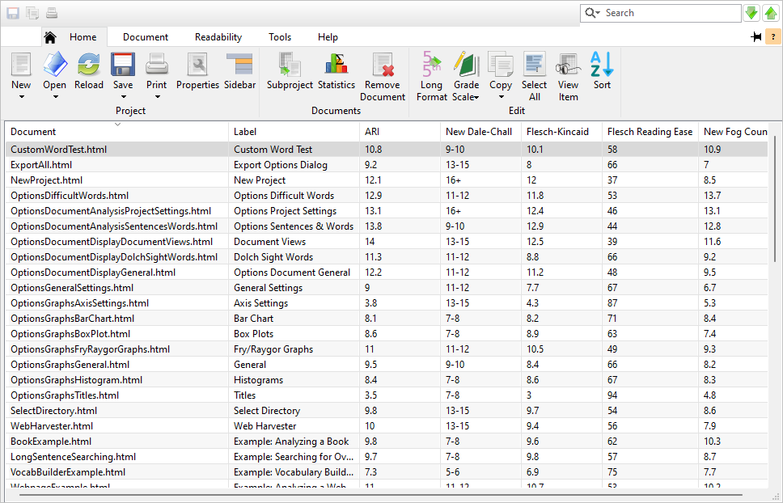
Next to each document name, all of its respective test scores are displayed. In the above example, we can see that the file NewProject.html has an ARI score of 12.1, a New Dale-Chall score of 16+, and a Flesch-Kincaid score of 12. To view any document’s scores in a vertical layout, double-click on it to display the View Item dialog:
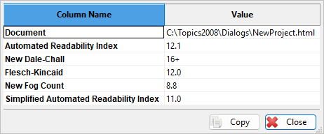
The Goals subitem will display any goals that are currently failing in the project:
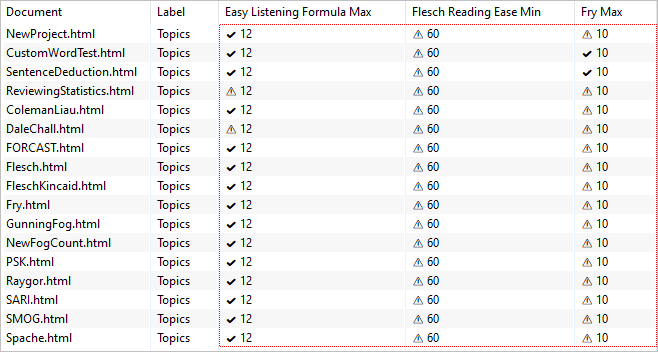
Above, we can see that most of the documents are passing the goal of having an ELF score below 12. However, most are failing to have an FRE score above 60.
For simplicity, only goals that are failing are shown here. If all goals are passing, then this window will display a message indicating that.
The Score Summary subitem will display the aggregated statistics for each test:

By default, the following statistics for each test are included:
- Valid N: the number of valid scores.
- Minimum: the lowest test score.
- Maximum: the highest test score.
- Range: the distance between the lowest and highest test scores.
- Mode(s): the most frequently occurring score. In the case of a tie, all modes will be listed. Note that grade scores are rounded down when searching for the mode.
- Means: the average test score. This is calculated by adding all the scores and dividing the total by the number of scores.
If Extended Information is enabled, then these additional statistics will be included:
- Median: the middle test score. This represents the middle point separating the lower and upper halves of the scores. This is calculated by sorting the scores and taking the score in middle if the number of scores is odd. If the number of scores is even, then the mean of the two middle points is taken.
- Skewness: the asymmetry of the scores’ distribution.
- Kurtosis: the peakedness of the scores’ distribution.
- Standard Deviation: the variability (or spread) of the scores. Note that sample std. dev. is used here because it is assumed that the batch contains a sampling of a larger document collection.
- Variance: another measurement of the scores’ variability, which is std. dev. squared.
- Lower quartile: the test score at the 25% percentile. This is the score separating the lower quarter of the scores from the rest of the scores.
- Upper quartile: the test score at the 75% percentile. This is the score separating the upper quarter of the scores from the rest of the scores.
Note that when calculating these statistics, failed test scores are treated as missing observations and not included. For example, let us say that you analyze 100 documents, but 3 of them cannot calculate Fry because their average sentence length is too high. In this case, the valid 97 Fry scores will be added and divided by 97 (not 100) to get the means.
Some special scores will be converted when being aggregated into these statistics. For example, grade ranges such as 5–6 (from New Dale-Chall) will be converted to its own average (e.g., 5–6 will be 5.5).
To remove any test in this list from the project, select it and press Ctrl+Del (, ) or ⌘+⌫ () on your keyboard.
The Grade Score Summary (x Document) subitem will display aggregated statistics for all grade-level scores, grouped by document:
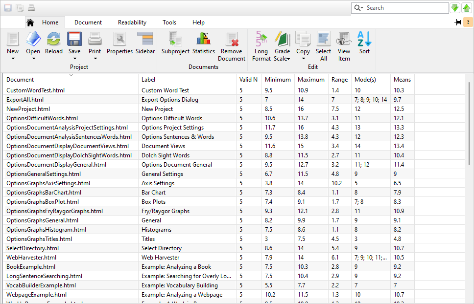
The Valid N column represents the number of grade-level tests that were successfully run against each document. After this column are additional columns displaying grade-level score statistics, document-by-document. In the above example, we can see that the document CustomWordTest.html had 5 different grade tests ran against it, with 9.5 being the lowest score and 10.9 being the highest.
Note that this subitem will only be available if at least one grade-level test is included in the project.
The Cloze Score Summary (x Document) subitem will display aggregated statistics for all predicted cloze scores, grouped by document:
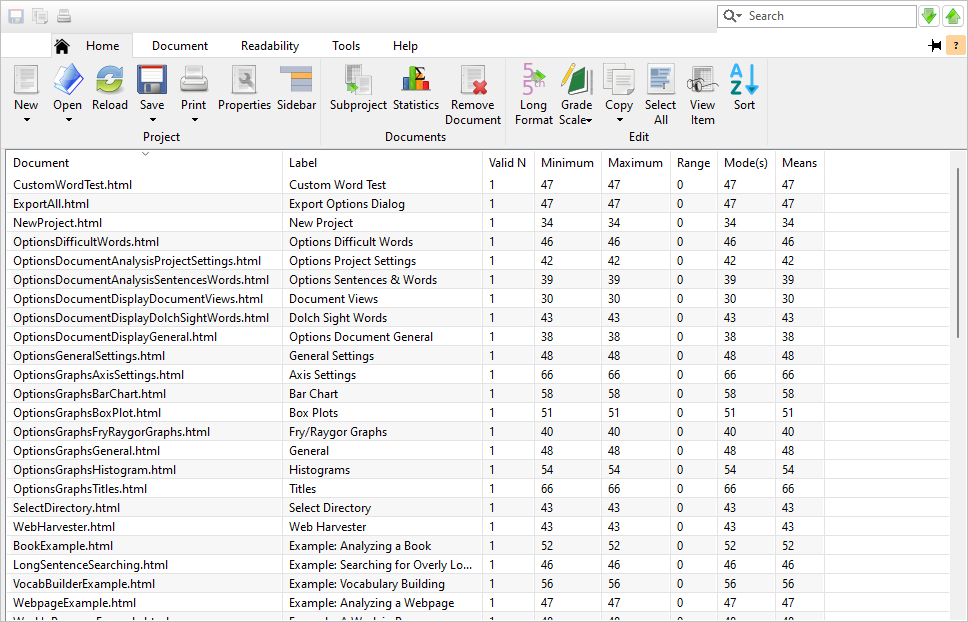
This subitem is interpreted in the same manner as the Grade Score Summary (x Document) page.
Note that this subitem will only be available if at least one predicted cloze test is included in the project.
Both of these tabs will include the same statistics as the Score Summary page.
6.2 Histograms
After opening a project, click on the Histograms icon on the project sidebar to view your documents’ test scores graphically plotted as histograms.
A histogram will be created for each test. For grade level tests, the bins (i.e., bars) will represent either a grade or range of grades. The height of each bar will reflect the number of documents that scored within the bar’s range. In the histogram below, we can see that 15 documents scored within the 10th grade range for the Flesch-Kincaid test:
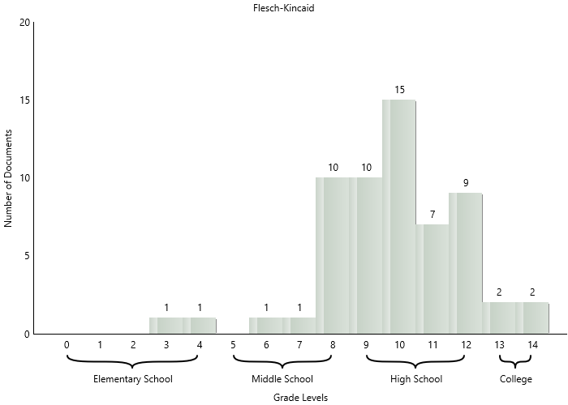
We interpret this first by looking at the highest bar. The label above it displays 15, which is the number of documents in that category. Now, to see the category, we look at the x-axis labels below the bar. The 10 on the middle of the bar indicates the bar’s range (in this case, the 10th grade). Because we are rounding our scores down (the default), scores such as 9.7 will be rounded down and fall into the previous bin (i.e., bar). Scores between 10.0 and 10.9 will fall into this bin; therefore, this bar will represent the 10th grade.
Selecting a bar will display the first 25 documents within that bin as a tooltip.
Continuing on, this batch has quite a few difficult documents. There are 15 documents in the 10th grade range, 10 documents in the 9th grade range, etc. In contrast, there are few easy documents, with only 2 in the 6th–7th grade ranges. From this, we can surmise that the readability of this batch needs improving.
Index tests (such as Flesch) will also have histograms, where the bins are ranges in the index. For example, in the histogram below we can see how most of the documents are in the lower range of the Flesch scale:
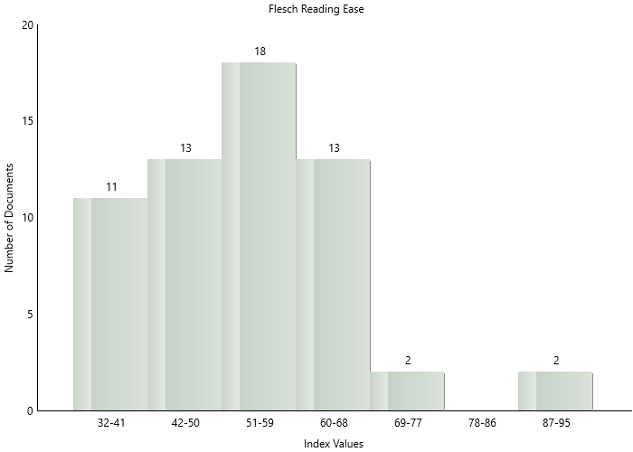
From this histogram we can also conclude that this batch has too many difficult documents.
If we revise these documents and reload the project (F5), then these graphs will show improvement:
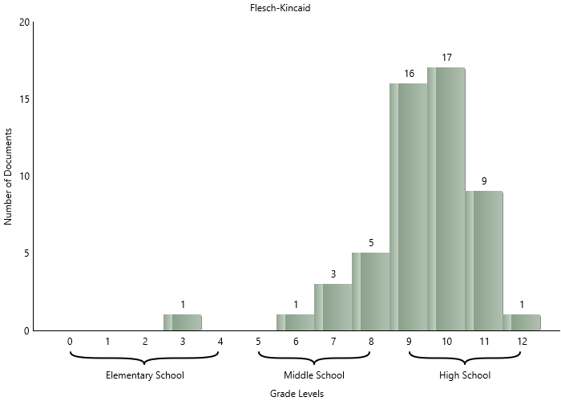
The appearance of these histograms can be customized from the Histogram page of either the Options or Project Properties dialog.
The binning method for a project is only applied to index and predicted-cloze score histograms. Grade-level histograms will always show one bar for each grade level, and the bar axis will start at 0 (i.e., Kindergarten).
6.3 Box Plots
After opening a project, click on the Score Box Plots icon on the project sidebar to view the documents’ test scores graphically shown as box plots.
If the project contains groups, then the boxes will be categorized into these groups:
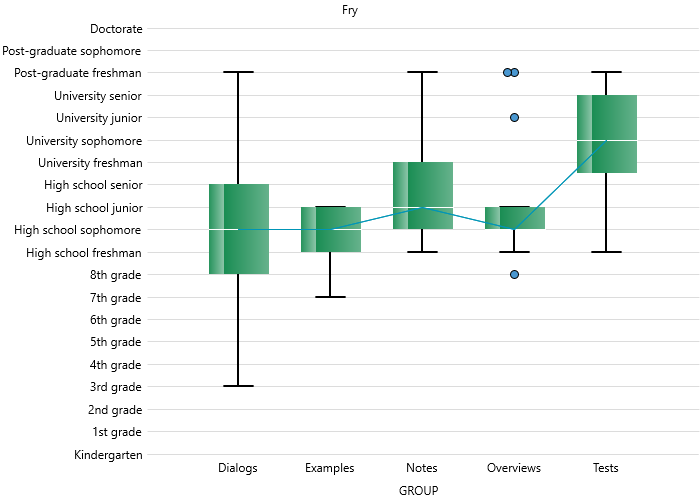
In the above example, note that the documents in the Overviews group mostly score in the high-school range. There are, however, a few outliers in this group that may need reviewing.
Along with the grade-level box plots, a separate box plot for each index test will also be included. Below is a box plot of Flesch scores from a batch:
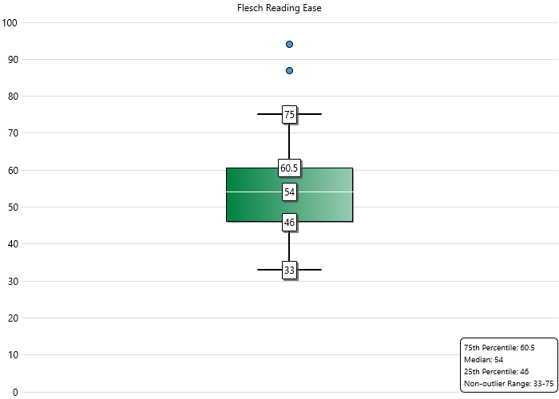
As we can see above, the middle half of the documents fall within a marginally acceptable range of 46–60.5 (60–80 is normally preferred). The upper whisker goes up to 75, meaning that there are a decent number of documents in the 60.5–75 range. Unfortunately, the lower whisker extends all the way to 33—this indicates a fair amount of difficult documents. As with the grade-level plot, this graph helps us conclude that some documents in this batch should be revised to lower their scores.
6.4 Readability Graphs
Refer to Section 5.2.
6.5 Words Breakdown
After opening a project, click on the Words Breakdown icon on the project sidebar, then click any of the following subitems:
Difficult Words: This list displays percentages of difficult words throughout the documents.
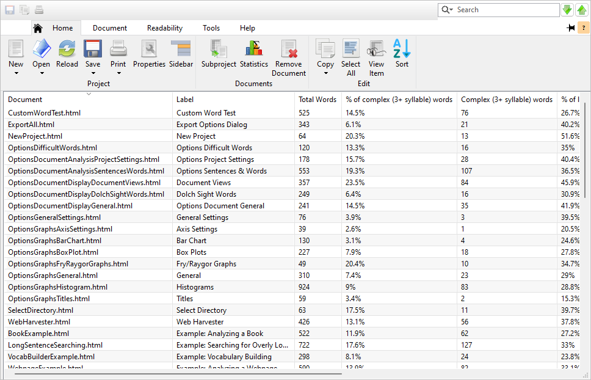
Next to each document name, the respective percentages and raw word counts of the following are displayed:
- Complex (3+ syllable) words
- Long (6+ character) words
- SMOG hard words
- Fog hard words
- Dale-Chall unfamiliar words
- Spache unfamiliar words
- Harris-Jacobson unfamiliar words
- Unfamiliar words for any custom tests
Note that test-specific word counts/percentages (e.g., Dale-Chall unfamiliar words) are only included if the respective test is included in the project.
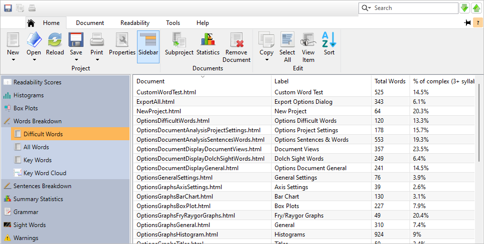
All Words: This list displays all the words from the documents and their respective frequency counts.
Key Words: This list is the same as All Words, except that it excludes filenames, numeric words, and common words, and then combines the remaining words. In regards to combining words, words with the same root will be merged into a single row. For example, report, reports, and reporting will be combined into one row, with the frequency counts for all three words also combined. As for excluding words, common words (e.g., the), numerals, and filenames are not included in this list. (If no words can be combined and there are no common words to ignore, then this list will not be shown.)
Key Word Cloud: Refer to Section 5.5.
6.6 Long Sentences
After opening a project, click on the Sentences Breakdown icon on the project sidebar and click on the Long Sentences subitem. This window will display a list of the difficult sentences from your documents.
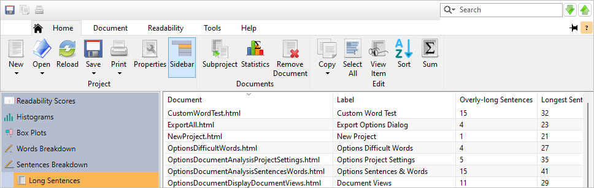
Note that if you are ignoring incomplete sentences, then this will only include the complete sentences. If you need to review all sentences from the documents, then select the option Include in analysis and treat as full sentences. Refer to Section 21.1 to learn more about how Readability Studio handles incomplete sentences.
To find the longest sentence, sort the Longest Sentence Length column into descending order. As we can see below, the longest sentence is now shown at the top of the list.
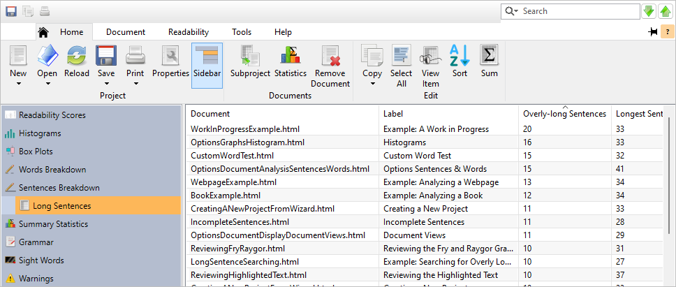
If the test scores indicate that the documents are too difficult for your audience, then review the overly-long sentences. You should consider splitting these sentences into smaller ones and revising any wordy items.
To view a specific document’s longest sentence, double-click on its row in this list. A vertical display of that document’s longest sentence will be shown:
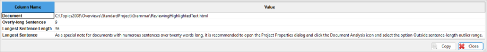
Note that if there are no long sentences in your documents, then this window will not be included.
6.7 Summary Statistics
To display a list containing statistics of all your documents, click on the Summary Statistics icon on the project sidebar. To control which statistics are included in this list, click the Edit Statistics button on the Home tab of the ribbon.
6.8 Grammar
Note that the following windows are only included if their respective grammar issues are detected in the documents.
Also, from any of these windows you can create a standard project. Within a given window, select a document in its list and click the Subproject button on the Home tab.
This is useful for reviewing a particular document in greater detail. Note that when this standard project is created, it will copy all the project settings from the batch project. These options may differ from your global configurations.
Reviewing Conjunction-Starting Sentences
After opening a project, click on the Grammar icon on the project sidebar and select the Conjunction-Starting Sentences subitem. This window will display a list of all sentences that begin with coordinating conjunctions.
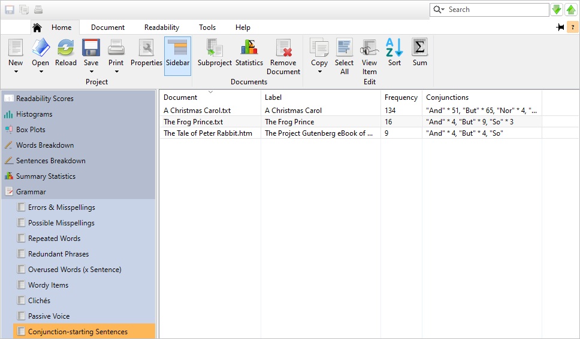
To view a specific document’s conjunction-starting sentences, double-click on its row in this list. A vertical display of that document’s conjunction-starting sentences will be shown:
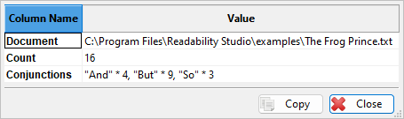
Refer to Section 5.7 to learn more about conjunction-starting sentences.
Reviewing Lowercased Sentences
After opening a project, click on the Grammar icon on the project sidebar and select the Lowercased Sentences subitem. This window will display a list of all sentences that begin with lowercased words (which is usually a typo).
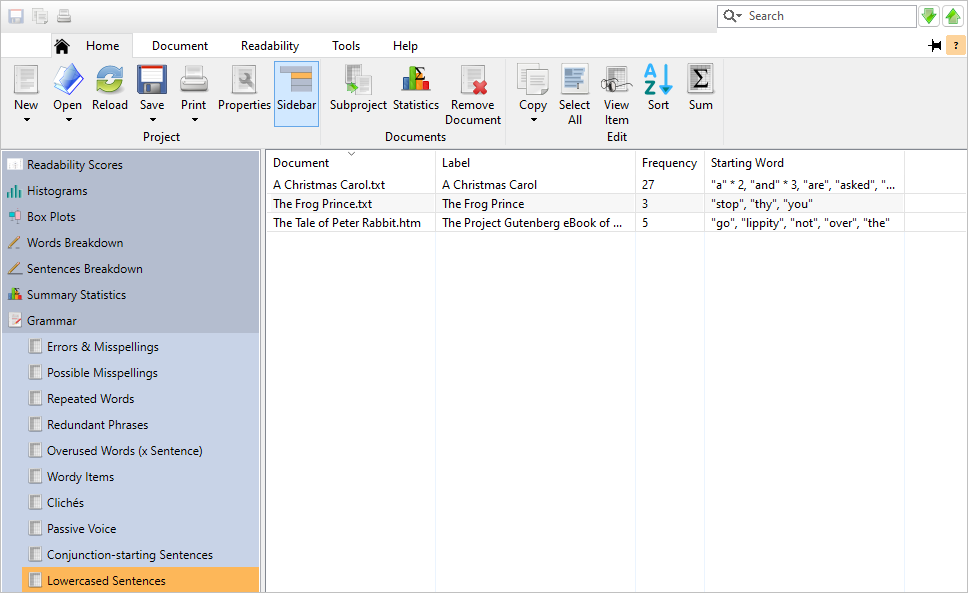
Note that if the option Sentences must begin with capitalized words is enabled, then this feature will be limited to sentences that begin new paragraphs. If you want to search for any possible sentences that begin with lowercased words, then you should leave this option unchecked.
To view a specific document’s lowercased sentences, double-click on its row in this list. A vertical display of that document’s lowercased sentences will be shown:
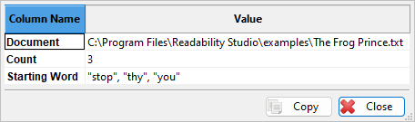
Reviewing Repeated Words
After opening a project, click on the Grammar icon on the project sidebar and select the Repeated Words subitem. This window will display a list of all repeated words from each document.
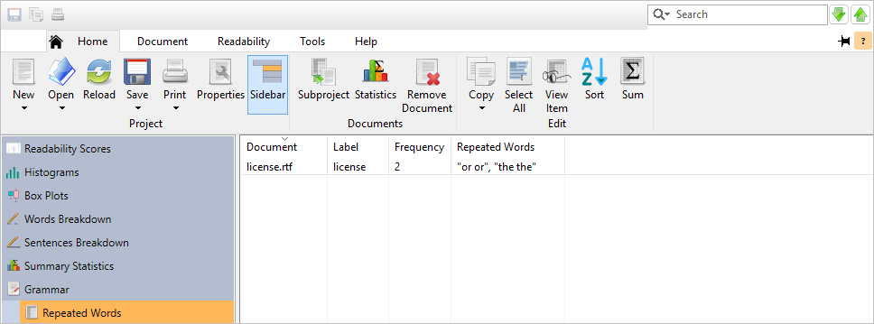
If a repeated word occurs more than once in a document, then a multiplication factor will be shown next to it. For example, if the the occurs two separate times in a given document, then this will be displayed as the the*2:
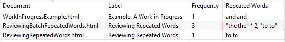
To view a specific document’s repeated words, double-click on its row in this list. A vertical display of that document’s repeated words will be shown:
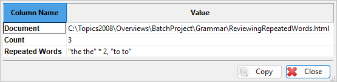
Refer to Section 5.7 and Section 21.6 to learn how repeated words are detected.
Reviewing Article Mismatches
After opening a project, click on the Grammar icon on the project sidebar and select the Article Mismatches subitem. This window will display a list of articles (i.e., a and an) that do not match their following noun.
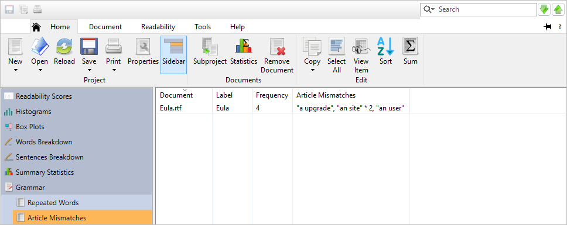
Article mismatch searching does not affect readability calculations, so this analysis is applied to all sentences. Incomplete sentences will be reviewed for this, even if they are excluded from the analysis.
If an article mismatch occurs more than once in a document, then a multiplication factor will be shown next to it. For example, if a electronic occurs twice in a given document, then this will be displayed as a electronic*2.
To view a specific document’s article mismatches, double-click on its row in this list. A vertical display of that item will be shown:
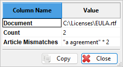
Refer to Section 21.7 to learn more.
Reviewing Wording Errors & Misspellings
After opening a project, click on the Grammar icon on the project sidebar and select the Errors & Misspellings subitem. This window will display a list of misused phrases, grammatically incorrect wording, and known misspellings from each document.
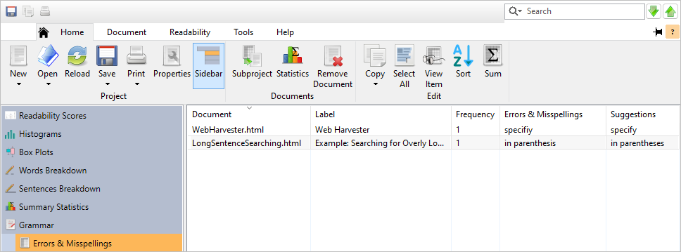
This search is applied to all sentences. Incomplete sentences will be reviewed for this, even if they are excluded from the analysis.
If a wording error occurs more than once in a document, then a multiplication factor will be shown next to it. For example, if other then occurs two separate times in a given document, then this will be displayed as other then*2.
To view a specific document’s errors, double-click on its row. A vertical display of that document’s wording errors will be shown:
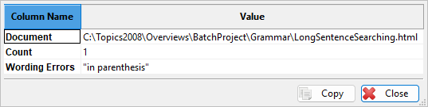
Reviewing Possible Misspellings
After opening a project, click on the Grammar icon on the project sidebar and select the Possible Misspellings subitem. This window will display a list of all possible misspellings from each document.
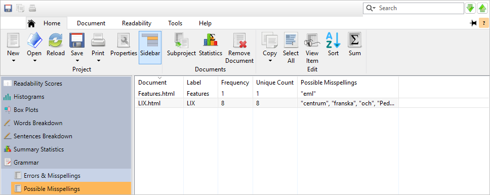
This search is applied to all sentences. Incomplete sentences will be reviewed for this, even if they are excluded from the analysis.
If a misspelling occurs more than once in a document, then a multiplication factor will be shown next to it. For example, if specfy occurs two separate times in a given document, then this will be displayed as specfy*2.
To view a specific document’s misspellings, right-click on its row and select View Item. A vertical display of that document’s misspellings will be shown:
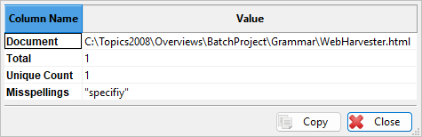
To add any document’s misspellings to your dictionary, double-click on its row to show the Add to Dictionary dialog. From here, you can add any (or all) reported misspellings to your dictionary. Afterwards, these words will no longer be reported as misspelled.
Reviewing Redundant Phrases
After opening a project, click on the Grammar icon on the project sidebar and select the Redundant Phrases subitem. This window will display a list of redundant phrases from the documents. Suggested replacements will also be shown next to each phrase in this list.
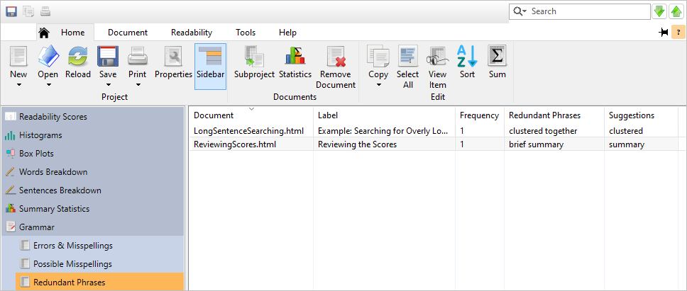
Redundant-phrase searching does not affect readability calculations, so this analysis is applied to all sentences. Incomplete sentences will be reviewed for this, even if they are excluded from the analysis.
If a redundant phrase occurs more than once in a document, then a multiplication factor will be shown next to it. For example, if brief summary occurs three separate times in a given document, then this will be displayed as brief summary*3:
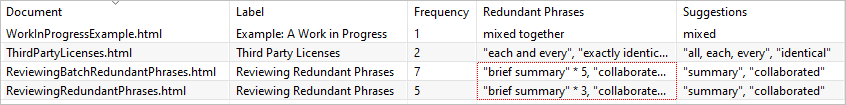
To view a specific document’s redundant phrases, double-click on its row in this list. A vertical display of that document’s redundant phrases will be shown:
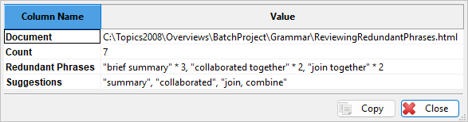
Refer to Section 5.7 for an explanation of what redundant phrases are.
Reviewing Wordy Items
After opening a project, click on the Grammar icon on the project sidebar and select the Wordy Items subitem. This window will display a list of wordy phrases and difficult words from the documents. Suggested replacements will also be shown next to each phrase in this list.
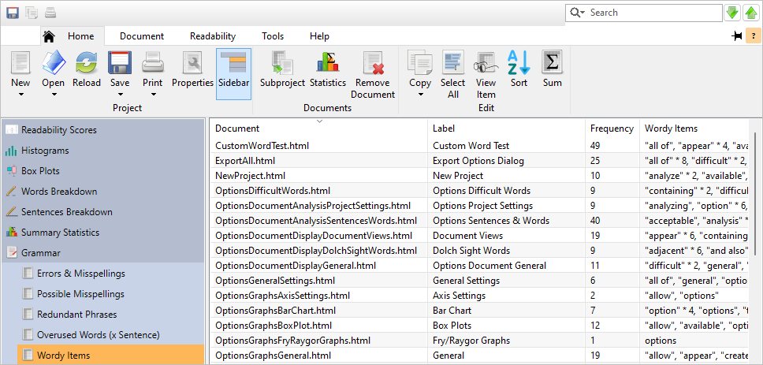
If a wordy item occurs more than once in a document, then a multiplication factor will be shown next to it. For example, if result in occurs two separate times in a given document, then this will be displayed as result in*2:
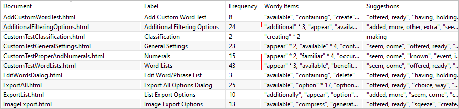
To view a specific document’s wordy item, double-click on its row in this list. A vertical display of that item will be shown:
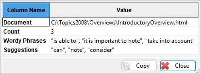
Refer to Section 5.7 for an explanation about wordy phrases.
Reviewing Clichés
After opening a project, click on the Grammar icon on the project sidebar and select the Clichés subitem. This window will display a list of clichés from the documents. Suggested replacements will be shown next to each cliché in this list.
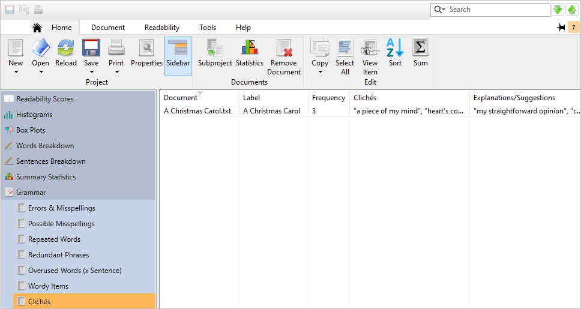
If a cliché occurs more than once in a document, then a multiplication factor will be shown next to it. For example, if off the wall occurs four separate times in a given document, then this will be displayed as off the wall*4:
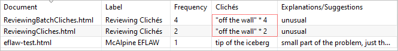
To view a specific document’s clichés, double-click on its row in this list. A vertical display of that document’s clichés will be shown:
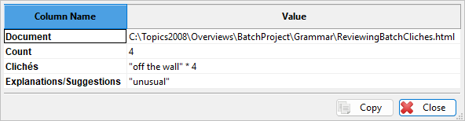
Refer to Section 5.7 for an explanation about clichés.
Reviewing Passive Voice
After opening a project, click on the Grammar icon on the project sidebar and select the Passive Voice subitem. This window will display a list of all passive phrases from each document.
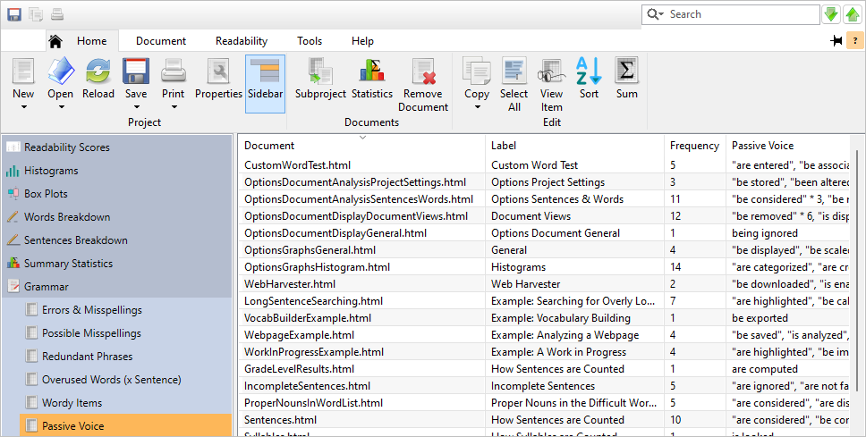
If a passive phrase occurs more than once in a document, then a multiplication factor will be shown next to it. For example, if be chosen occurs twice in a given document, then this will be displayed as be chosen*2.
To view a specific document’s passive phrases, right-click on its row and select View Item. A vertical display of that document’s passive phrases will be shown:
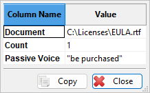
Refer to Section 5.7 for an explanation about passive phrases.
Reviewing Overused Words (x Sentence)
After opening a project, click on the Grammar icon on the project sidebar and select the Overused Words (x Sentence) subitem. This window will display a list of all sentences that use the same word multiple times from each document. (These are more of style suggestions, rather than grammar issues.) When reviewing these, it is recommended to change some of the repeated words to add more variety to your content.
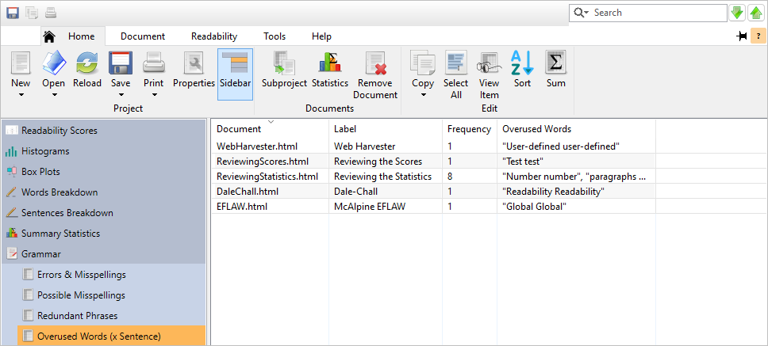
Numeric words, proper nouns, words containing less than three letters, and common words (e.g., the) are excluded from this review.
To view a specific document’s overused words, right-click on its row and select View Item. A vertical display of that document’s overused words will be shown.
Refer to Section 5.7 for an explanation about overused words.
6.9 Dolch Sight Words
After opening a project, click on the Dolch Sight Words icon on the project sidebar. There will be three lists available: Dolch Word Coverage, Dolch Words, and Non-Dolch Words.
The Dolch Word Coverage subitem will display the Dolch word coverage for each document:
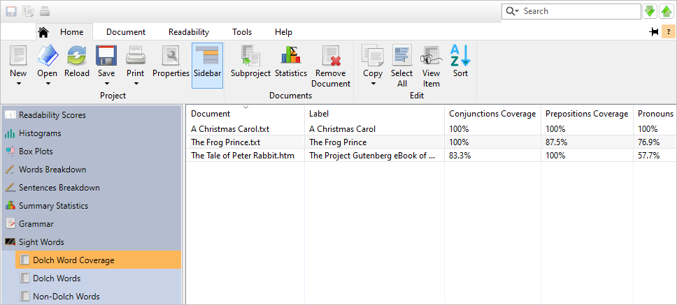
Next to each document name, the respective coverage percentage for each category is displayed.
The Dolch Words subitem will display the percentages of Dolch words used in each document:
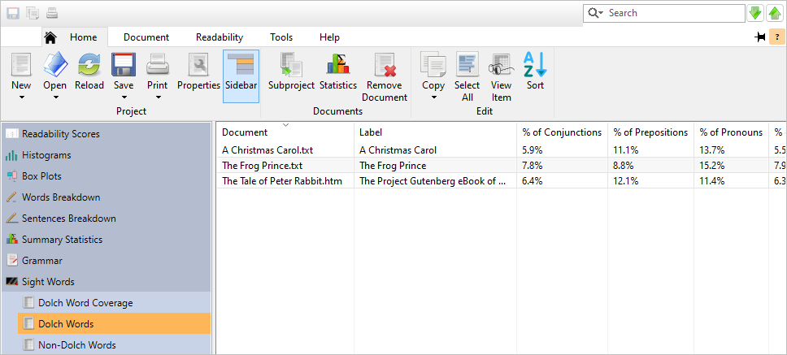
Note that the raw counts of these words will also be included if Extended Information is enabled.
The Non-Dolch Words subitem will display the percentages of words from each document that do not appear on any of the Dolch lists:
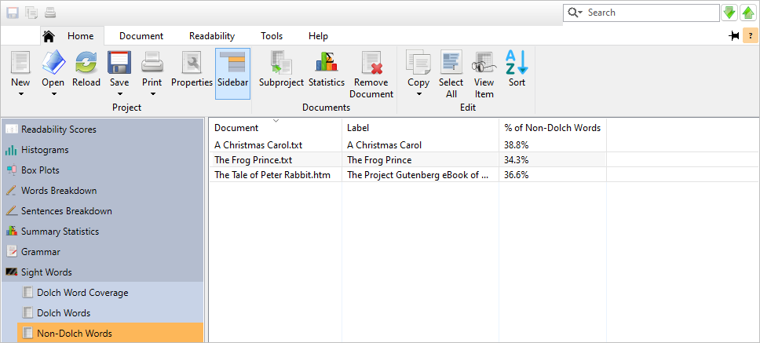
Note that the raw counts of these words will also be included if Extended Information is enabled.
6.10 Warnings
After opening a project, click on the Warnings icon on the project sidebar to view any warnings issued while loading the documents:
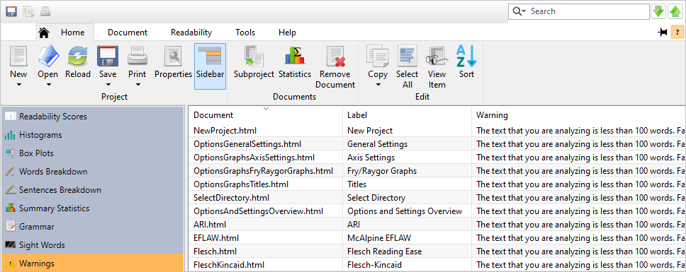
Warnings that may occur are:
- A document could not be found.
- A document was not analyzed because it did not contain enough text.
- A test could not be run for a particular document.